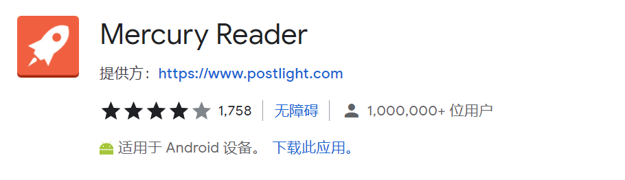
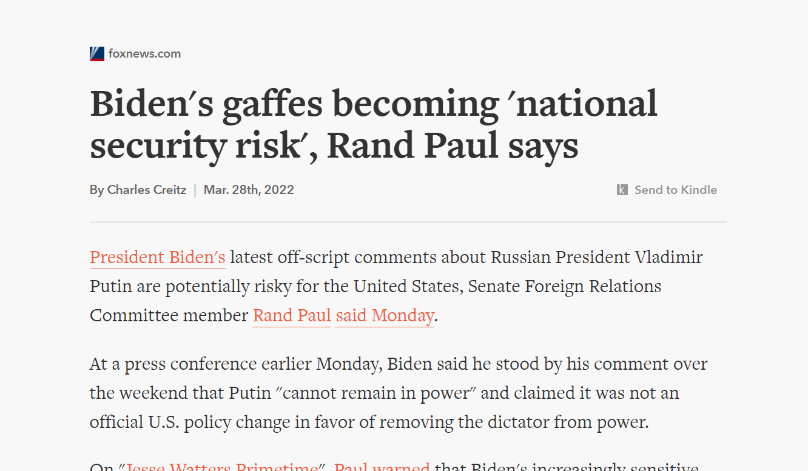
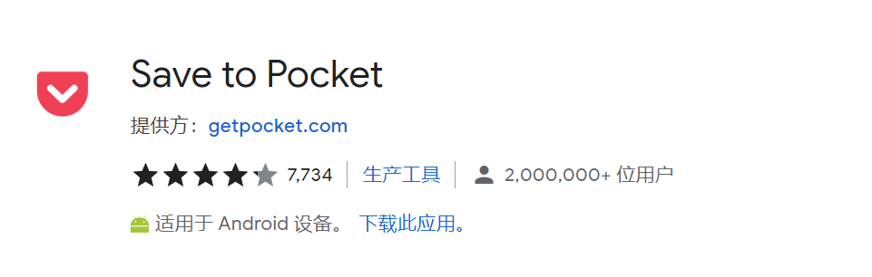
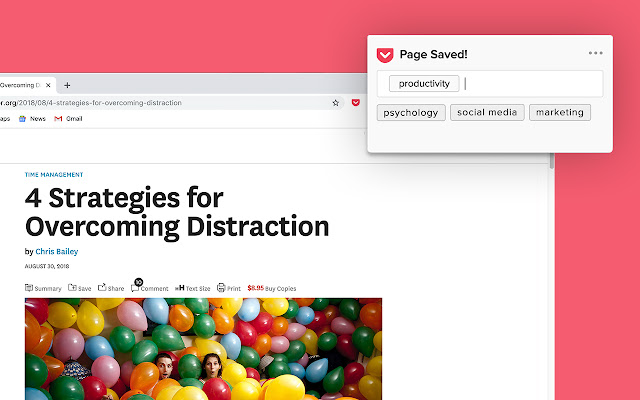
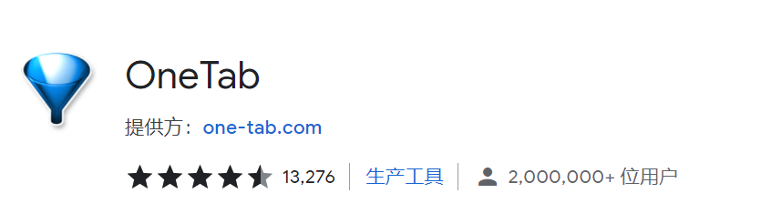
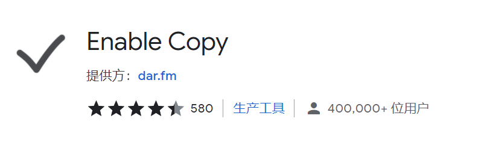

|
提高工作效率类插件 |
1.Mercury Reader

这个插件能帮助你隐藏页面广告，使得阅读体验更加流畅。文章排版也能变得更加整齐，还支持一键发送至Kindle。

2.Save to Pocket

用来收藏文章和视频的神器，点下按钮，页面就会自动传到pocket的平台上，非常方便查找。

|
3.One Tab

查资料需要打开很多页面时很麻烦，会很占内存，也比较难分辨。这时，点一下One Tab插件就可以将所有的网页自动收纳成一个网页，查找网页起来就一目了然。
4.Enable Copy

一些文库网站因为版权问题无法直接复制内容，需要充值会员或者关注公众号后才能继续关注。添加了这个插件之后就能直接复制了，可以省去一些麻烦。
| |
|